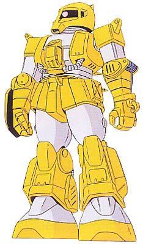

| MS-06W Worker Zaku General Purpose Construction Mobile Suit |
|
|  | |
General and Technical Data |
|
|
Model number: MS-06W Code name: Worker Zaku Unit type: mass production mobile suit Operator: Zeon Duchy Dimensions: head height 17.7 meters Weight: empty 51.8 metric tons; max gross 65.0 metric tons Construction: super high-tensile steel Powerplant: Minovsky type ultracompact fusion reactor, output rated at 899 kW Propulsion: rocket thrusters: 2 x 29500 kg, 2 x 850 kg Performance: thruster acceleration 0.63 G; maximum ground running speed 65 km/h Equipment and design features: sensors, range 2900 meters Fixed armaments:Winch, mounted in left hand; Shovel, mounted in right hand Optional hand armaments: heat hawk, battery powered; 3x grenade Magnetic Storage Racks: 5, primary rack on backpack, one secondary rack on either hip. 2 ammunition racks on front hips. Legs can additionally mount 3-tube missile launchers or panzer fausts. |
|
| Technical and Historical Notes | |
|
Mobile suits, because of their powerful reactors, ability to operate in nearly every known environment, and manipulable limbs, made them useful not only for war, but also for labor. While the Zaku line was originally created to be a war machine, the rollout of the Zaku II C put a lot of old Zaku IA models into the proverbial attic. Needing something to do with their older machines at the same time as they were gaining a vast amount of new territory, many old Zaku I's were transformed into the MS-06W.
While it used the MS-06 model number and many MS-06 parts, the Worker Zaku was more a Zaku I than a Zaku II. These suits were used in Western Asia during the One Year War, as well as for the construction of space colonies in Side 3. The existing cockpit was altered and constructed from a cockpit of a worker vehicle, and had an overhang like the MS-06V Zaku Tank. A winch was attached to the left arm and the right arm had a shovel. Because the Principality was worried about a shortage of resources they shifted their efforts towards the Zaku Tank later in the war, which used many of the same parts. However, many Worker Zaku's remained in service up until the end of the war.
While it is a labor use unit, the Duchy of Zeon was still hesitant to sell its mobile suits to third parties. After the signing of the Antarctic Treaty however, the sudden need for resources for the Earth Invasion operation prompted the sale of many of the then new MS-06W models, and several found their way into the hands of the JDEG, CMC, LMC, and Riah Republic. Some would go to the Black Market as well, and many would be seen operated by Rogues, equipped with stolen heat hawks from military models.
|
 RPG quick stats sheet
RPG quick stats sheet | Weapons and Features | |

  |
|